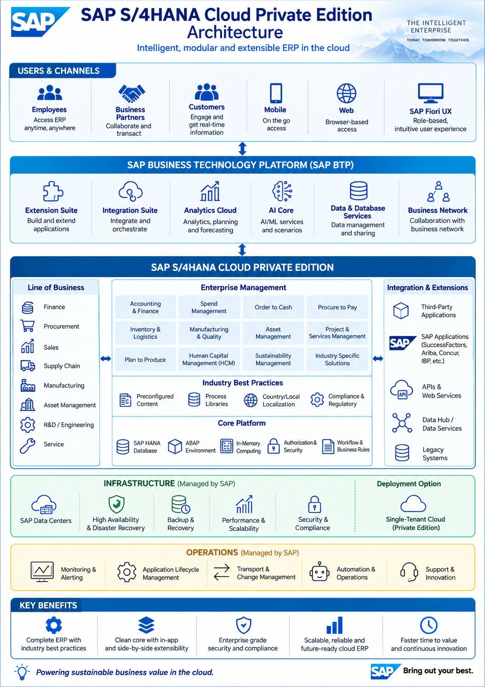

Case Study 01
SAP S/4HANA Cloud Private Edition Transformation
🌐 Domain: SAP / ERP Transformation
💼 Role: Senior Program / Project Manager
The Challenge
The organization was operating on a legacy SAP ERP
landscape with complex business processes,
customizations, integration dependencies and
modernization requirements.
The transformation required a structured roadmap
for moving to SAP S/4HANA Cloud Private Edition
while minimizing business disruption and maintaining
business continuity.
Approach & Solution
-
Led program planning and transformation roadmap
covering business, technology, data and integration
workstreams.
-
Coordinated SAP S/4HANA Greenfield / Brownfield
implementation activities across business and
technology teams.
-
Established program governance covering scope,
schedule, risks, dependencies, financials and
executive reporting.
-
Facilitated fit-to-standard workshops and alignment
between business stakeholders, SAP teams and
implementation partners.
-
Coordinated integration, data migration, testing,
cutover and Go-Live readiness activities.
-
Managed stakeholder communication across business,
SAP, architecture, infrastructure and technology
teams.
SAP S/4HANA Cloud Private Edition Architecture
The target architecture provides the foundation for
SAP S/4HANA Cloud Private Edition transformation,
integrating enterprise applications, SAP BTP,
analytics, integration services and external business
systems.

SAP S/4HANA Cloud Private Edition –
Enterprise Architecture
Program Management Focus
-
Program roadmap and milestone management.
-
Business and technology stakeholder alignment.
-
RAID management covering risks, assumptions,
issues and dependencies.
-
Vendor and implementation partner coordination.
-
Data migration and integration governance.
-
Testing, cutover and Go-Live readiness governance.
-
Executive steering committee reporting and
decision management.
Technology Landscape
-
SAP S/4HANA Cloud Private Edition
-
SAP Business Technology Platform (SAP BTP)
-
SAP Integration Suite
-
SAP Fiori
-
SAP Analytics Cloud
-
SAP BW/4HANA
-
SAP Cloud ALM
-
SAP Signavio
Program Impact
Established a structured enterprise transformation
framework for SAP modernization, enabling alignment
across business processes, technology architecture,
integration, data and delivery governance.
Program Management Takeaway:
Successful SAP transformation requires alignment
across business strategy, process transformation,
architecture, data, integration, people and delivery
governance.